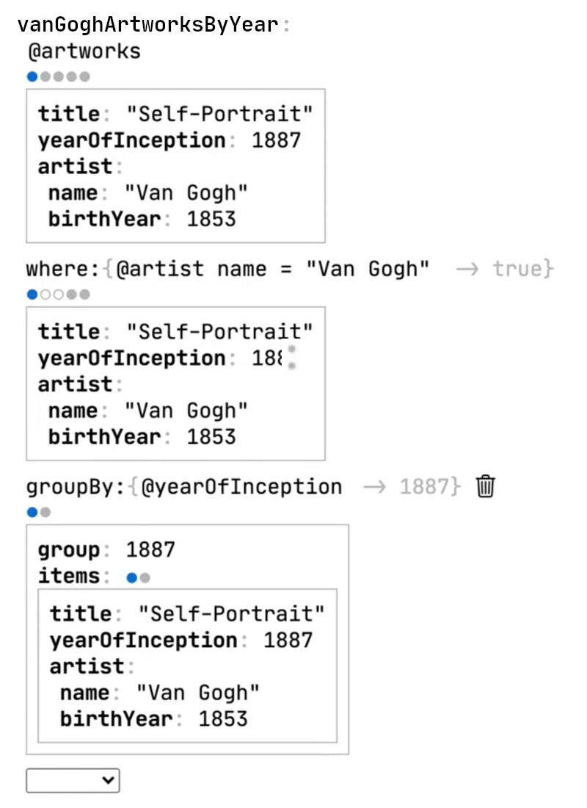

Programming through graphical interfaces
This is a project I've developed under the name Pluto. Originally the goal was to turn this into a working product but over time I've realized the tremendous scope. So now it's a collection of several prototypes that experiment with new graphical interfaces for building interactive applications.
Statechart prototype
2019

I was inspired by sketch.systems a small tool that helps you to reason about the underlying states of complex applications with statecharts. I liked the idea of having a single graphical representation that gives you a high level overview overview of a complex system. Sketch.systems can be only used to create click dummies. With this prototype I tried to do but with the goal that

One thing that would be interesting to explore further is to allow nested states by introducing the concept of components that have their own internal state.

Data transformation prototype
2020

A live coding environment for data transformations. It always shows you the data that you're operating on so you don't have to play computer in your head. List results are displayed in an abbreviated form where the whole list is represented by one example item. This compact format gives the environment enough space to show intermediate results so you can follow along multi step computations
The dots indicate the number of items in a list an can also be used to navigate between them They can also provide additional information here we can see that that the second and third item have been filtered out You can also collapse the graphical annotations so it takes the same space as a purely textual representation

Table prototype
2020
This project was